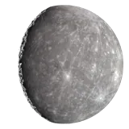
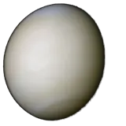
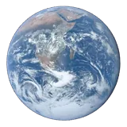
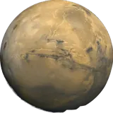
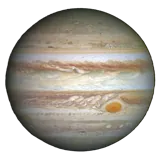
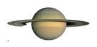
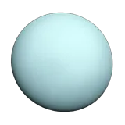
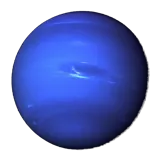

Planets
Tap a world for its size, gravity, temperature, atmosphere and facts.
Star
Planets

Mercury
4,879 km4,879 किमी
4,879 km4,879 किमी

Venus
12,104 km12,104 किमी
12,104 km12,104 किमी

Earth
12,756 km12,756 किमी
12,756 km12,756 किमी

Mars
6,792 km6,792 किमी
6,792 km6,792 किमी

Jupiter
142,984 km1,42,984 किमी
142,984 km1,42,984 किमी

Saturn
120,536 km1,20,536 किमी
120,536 km1,20,536 किमी

Uranus
51,118 km51,118 किमी
51,118 km51,118 किमी

Neptune
49,528 km49,528 किमी
49,528 km49,528 किमी